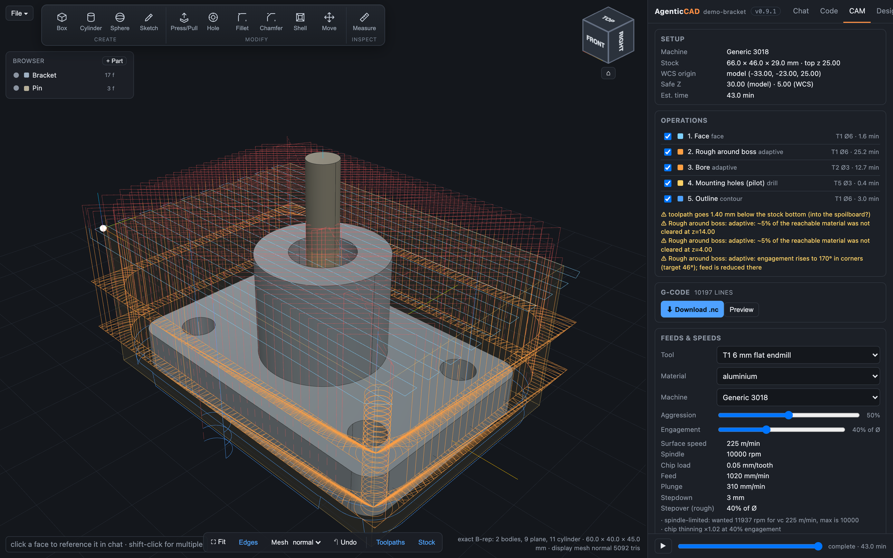
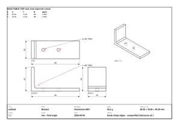

AgenticCAD documentation
Everything the app does, how it stores it, and how to drive it by chat, by hand, or from the agent's tools. For a guided walk-through, start with the tutorials.
Overview
AgenticCAD is a browser CAD/CAM workspace with a Claude agent inside it. A design is a Python script written against build123d; the exact OCCT kernel executes it and the three.js viewer shows the result. The agent edits that script through tools; you edit it through chat, through the Fusion-style ribbon, the parameters panel and the sketch editor, or directly in the Code tab. All routes end in the same file.
browser (three.js viewer · ribbon · sketch editor · chat) ⇄ websocket ⇄ server.py (FastAPI)
├─ agent.py Claude Agent SDK session + in-process MCP tools
├─ cad_kernel.py build123d exec, exact B-rep, display meshing, export
├─ cam_kernel.py 2.5D / 3D toolpaths, GRBL post
├─ drawing.py · threads.py · library.py · script_edit.py
└─ workspace/ designs, library, machines, tools, history, exportsDesktop app
The desktop app is the same program in a native window with Python bundled. Two things to know:
- Claude Code is required and not included. AgenticCAD drives Anthropic's Claude Code command-line tool and is not permitted to redistribute it. On first launch the app checks for it (on PATH and in the official install locations) and, if missing, shows a setup page with the install command for your platform and the sign-in step. Install: macOS and Linux
curl -fsSL https://claude.ai/install.sh | bash; Windows PowerShellirm https://claude.ai/install.ps1 | iex. Then runclaudeonce in a terminal to sign in (Claude Pro or Max subscription, or an API key). The npm-based install on Windows (claude.cmd) cannot be launched by a desktop app; use the installer above. - The builds are unsigned for now. macOS: the app is ad-hoc signed, so the first launch needs right-click → Open, or System Settings → Privacy & Security → Open Anyway. Windows: SmartScreen shows "Windows protected your PC"; choose More info → Run anyway. Signed builds will follow.
Your data lives in the OS user-data folder: ~/Library/Application Support/AgenticCAD on macOS, %LOCALAPPDATA%\AgenticCAD\AgenticCAD on Windows (designs, library, machines, tools, history, exports, settings). Set AGENTICCAD_WORKSPACE to move it. The app picks a free localhost port; the UI is the same page you would see from a source install, so everything else in these docs applies. Intel Macs and Linux: run from source below.
Install from source
Requirements: Python 3.12, a Claude Code login (the Agent SDK's bundled binary uses it) or an ANTHROPIC_API_KEY, and a modern browser.
# unzip the release (or git clone https://github.com/agenticcad/agenticcad.git), then inside the folder:
python3 -m venv .venv && .venv/bin/pip install -r requirements.txt
.venv/bin/python server.py # http://127.0.0.1:8765| Variable | Effect |
|---|---|
PORT | Listen port (default 8765). |
ANTHROPIC_API_KEY | Use an API key instead of the Claude Code login. |
AGENTICCAD_MODEL | Model id override (the Settings dialog is the usual way). |
AGENTICCAD_WORKSPACE | Workspace directory (default ./workspace). |
AGENTICCAD_NO_AGENT=1 | Run the server without a Claude session (used by the tests). |
The workspace

- Side panel: Chat (the conversation with selection chips and images), Code (the script with syntax highlighting; edit and Run with ⌘↩ to rebuild without the agent; switch between
design.pyandcam.py), CAM (setup, operations, warnings, libraries, feeds calculator, G-code), Design (parameters, measure, drawings, import), Library. Drag the divider to resize, double-click to reset, ⌘B to hide. - Viewer: orbit, pan and zoom with the mouse; the ViewCube snaps to faces, edges and corners and its
⌂is the home view. Bottom toolbar: Fit, Edges, display-mesh quality (draft / normal / fine), Undo, Toolpaths and Stock toggles. - Browser: the body tree with visibility dots, context menus (rename, delete, hide, zoom, export, save to library, move/rotate) and a Sketches section. + Body and + Part add primitives and library parts.
- File menu: New (an empty design; a fresh install starts empty too), Open, Save, Save as, Import .py, Download .py, Import STEP, Export STEP, Export STL (resolution dialog), Shop drawings.
- Header: design name (with
•when unsaved), version badge (click for the changelog), Settings⚙.
Design as script
A design is one build123d script that assigns result. The kernel executes it in a namespace that also provides import_step, from_library and the thread helpers.
# Mounting plate with a bossed bore
plate_l, plate_w, plate_t = 60, 40, 8
boss_d, boss_h, bore_d = 20, 15, 8
with BuildPart() as plate:
Box(plate_l, plate_w, plate_t)
with Locations((0, 0, plate_t / 2)):
Cylinder(boss_d / 2, boss_h, align=(Align.CENTER, Align.CENTER, Align.MIN))
Hole(bore_d / 2) # note: Hole takes a radius
result = {"Plate": plate.part}resultmay be a single shape, a dict of named bodies, or nested dicts for components:{"Base": {"Bracket": b, "Washer": w}, "Pin": pin}. A shape with disjoint solids is split into bodies automatically.- Top-level
name = numberlines are parameters (see Parameters). - Every successful build is saved to
workspace/history/<ms>.py; Undo steps back through them. - Manual operations rewrite the script with an AST-based editor (
script_edit.py): rename/delete bodies, add bodies, set parameters, sketch blocks, and wrap the body expression for ribbon operations, hoisting_plate = plate.partbeforeresultwhen the body is referenced more than once. - The agent receives a
[Note]whenever you change the script out of band (open, import, undo, hand edit, ribbon operation), so it re-reads the code before editing.
Chat and selection
Click a face, an edge or a body in the viewer (or a row in the Browser) and it becomes a chip on the composer. ⇧-click for several. The sent message keeps its chips and the server expands them into a [Selected geometry] block: face id, body, analytic type, centre, normal, size, radius and the clicked point. Because face ids are renumbered on every rebuild, the agent is told to reference faces by geometry (faces().sort_by_distance((x, y, z))[0]) and to re-inspect after building. Hover a chip later to see a marker where that face was; click it to reselect the matching face by type and centre.
Selected faces stay lit (dimmer orange) while the agent works, until the next rebuild or click. Sketches are selectable as chips too.
Reference images
Attach photos, napkin sketches or old drawings with 📎, by dragging onto the composer or viewer, or by pasting. Images are downscaled in the browser (≤1600 px JPEG), sent inline so the agent sees them directly, kept as thumbnails in the bubble and saved to workspace/images/. Dimensions you type override what it estimates from the picture.
Bodies and the Browser
- Click a body to select it (chip); the dot toggles visibility (kept across rebuilds by path); double-click zooms to it.
- Right-click or
⋯: Rename…, Delete, Hide/Show, Zoom to, Export STEP/STL of that body, Save to library…, Move / rotate… (wraps the body expression inPos(...) * Rot(...) * (...)). - Rename and Delete rewrite the script directly when the body is a literal key in
result = {...}; otherwise the request is handed to the agent. Deleting the last body at a level is refused. - + Body: box, cylinder or sphere with dimensions and centre. + Part: insert from the library.
- Sketches ▸
⋯▸ Extrude…: distance, direction, and new body / join / cut.
Ribbon tools
The ribbon at the top of the viewer gives you Fusion-style manual modelling without an agent turn. A tool opens a command dialog under the ViewCube that walks you through it: step indicator, a live prompt (“Click a face…”), chips for what you picked (× to drop), fields with units (↑↓ ±1, ⇧ ±10, ⌥ ±0.1), ↵ OK, ⌫ removes the last pick, Esc cancels.
| Tool | Key | Picks | Written to the script |
|---|---|---|---|
| Box / Cylinder / Sphere | B C O | a face (or the grid) | a new body placed with its base on the face along its normal |
| Sketch | K | a planar face, or none for a base plane | a sketch block (see Sketches) |
| Press/Pull | Q | a planar face; drag the handle or type | body + extrude(face_at(pt), amount, dir), or - to cut |
| Hole | H | a point on a face | hole(body, d, at, depth|through) with counterbore/countersink, or tap(body, "M4", …) |
| Fillet / Chamfer | F X | edges, or a face for all its edges | body.fillet(r, [...]) / body.chamfer(l, None, [...]) |
| Shell | L | faces to open | offset(body, amount=-t, openings=[...]) |
| Move | V | a body | Pos(...) * Rot(...) * (body) |
| Measure | I | vertices, edges, faces | nothing; see Measure |
Face references use the point you clicked (faces().sort_by_distance((x, y, z))[0]), never face centres, so they survive most later edits. Every operation is undoable and the agent is notified.
Sketches
Select a planar face (or none for XY/XZ/YZ plus an offset) and press K. The camera squares up to the plane; draw rectangles, circles, polygons and slots by clicking (grid snap; ⌥ for free placement), toggle Subtract, edit numbers in the item list, then Finish. The sketch is stored in the script as a block:
# sketch:sketch1 {"plane": {...}, "items": [...]}
with BuildSketch(Plane(origin=(0, 0, 4), x_dir=(1, 0, 0), z_dir=(0, 0, 1))) as _sketch1:
with Locations((-18, 0)):
Rectangle(14, 20)
with Locations((-18, 0)):
Circle(3, mode=Mode.SUBTRACT)
sketch1 = _sketch1.sketch
# /sketch:sketch1So sketch1 is a normal build123d Sketch that you or the agent can extrude, cut with (part - extrude(sketch1, amount=-h)) or revolve. The JSON header lets the editor reopen it (Browser ▸ Sketches ▸ double-click). Sketches render as cyan outlines. The agent edits sketches only through its sketch tool, in the same item format, so anything it draws stays editable by you.
Threads
threads.py carries ISO metric tables (pitch, tap drill, clearance fine/medium/coarse, hex and socket head sizes, nuts, washers) and helpers available in every script:
| Helper | What it does |
|---|---|
iso("M4"), tap_drill, clearance_dia | table lookups |
tap(part, "M4", at=(x, y, z), depth=6 | through=True, real=False, axis=(0, 0, -1)) | cuts the tap-drill hole from the surface point along the axis and registers the thread; real=True models the helix via bd_warehouse |
hole(part, d, at, depth | through, counterbore=(D, h), countersink=D) | plain hole with optional counterbore or 90° countersink |
tapped_hole(size, depth, at) | a cosmetic cutter you subtract yourself |
bolt(size, length, head="hex"|"socket"|"none"), nut, washer | fasteners as bodies |
Registered threads appear in the model summary and in shop drawings as callouts such as M4×0.7 ↧6 or M4×0.7 THRU instead of Ø3.3.
Parameters
Every top-level name = number in the script is a field in the Design tab (↑↓ ±1, ⇧ ±10, ⌥ ±0.1). Changing one rewrites that literal and rebuilds. Library parts saved as designs keep their parameters, so from_library("bracket", width=30) works. Agent tools: get_parameters, set_parameters. API: GET/POST /api/params.
Measure
Press I (or 📐 in the Design tab). The cursor snaps vertex > edge > face point with a live readout: line length, arc radius and sweep, circle Ø. Two picks give the distance with the closest points drawn and labelled, Δxyz, and the angle (line–line, line–plane, plane–plane) with parallel and perpendicular flags; two circles give centre spacing; two planes give the gap. Click bodies in the Browser for volume, mass and centre of mass (material names or g/cm³), two bodies for clearance or interference volume. ⌫ or right-click removes the last pick, Esc clears. Agent tools: measure (faces, edges, points, bodies), mass_properties.
Shop drawings
Design tab or File ▸ Shop drawings…: third-angle front, top and right views plus an isometric, with hidden lines (OCCT HLR projection), overall dimensions, hole callouts (n× Ø, THRU or depth, thread labels), lettered holes with a coordinate table, and a title block with size, mass, scale and date. One SVG per body plus an assembly sheet, and a DXF of the view geometry, written to workspace/drawings/. Agent tool: make_drawings.

Part library
Parts live in workspace/library/<part>/ as either a parametric script (a whole design saved with its parameters) or an exact STEP body, with description, tags and a thumbnail.
- Browser ▸ + Part inserts one as a new body:
from_library("name", param=value)is added to the script. - Body ▸
⋯▸ Save to library… saves that body (exact STEP). - Library tab: search by name, description and tags; insert; delete; + Design (save the current design as a parametric part); + STEP.
- The agent sees the part names in every turn and has the
librarytool (list, search, get, insert, save_design, save_body, delete). It is instructed to check the library before modelling standard or reusable parts.
STEP import and export
File ▸ Import STEP… (or drop a .step on the viewer) adds it as a new body (import_step("file.step") is added to the script, the file is copied to workspace/imports/), as a new design, or straight into the library. Export: File ▸ Export STEP (exact, bodies stay separate solids) and Export STL (dialog: resolution and all-or-one body). Agent: export_model(name, formats, tolerance, angular_tolerance, body). API: /api/export/{step|stl}.
Fidelity
- The kernel geometry is exact B-rep: planes, cylinders, cones, spheres, tori, B-splines.
inspect_modelreports the analytic type and radius of each face. - The viewer mesh is display-only, generated from the exact shape with exact per-vertex surface normals at a preset chordal and angular deviation (Mesh: draft / normal / fine re-tessellates without rebuilding). Picking maps triangles back to B-rep faces.
- STEP export is exact. STL is tessellated only at export, at the deviation you choose; it never reuses the display mesh.
CAM overview
CAM is a second script per design, cam.py (saved as <name>.cam.py), written against cam_kernel.py and built with the build_cam tool or the Code tab. It must assign program. The namespace provides model, part, bodies, tools and machines.
part = bodies["Plate"]
stock = Stock.from_model(part, margin=3, top=1.0)
setup = Setup(machines["Generic 3018"], stock, origin="stock-top-left")
t6 = apply_feeds(tools[1], "aluminium", setup.machine)
program = Program(setup, name="plate")
program.add(face(setup, t6, z_top=stock.top, z_bottom=19))
program.add(adaptive(setup, t6, stock_minus(setup, part, 0.0, expand=6), z_top=19, z_bottom=4, stepover=0.15))
program.add(drill(setup, tools[5], [h for h in holes(part) if h.diameter < 6], peck="auto"))
program.add(contour(setup, t6, section(part, 0.0), z_top=4, z_bottom=-4.5, tabs=4))Geometry comes from the exact B-rep: section(part, z), silhouette(part), stock_minus(setup, part, z, expand), holes(part) (vertical round holes from concave cylindrical faces, with through detection), face_polygon(model.get_face(id)) for a clicked face, plus circle and rect. The CAM tab shows the setup, the operations with colour and visibility toggles, warnings, the machine and tool libraries, a feeds and speeds calculator and the G-code preview. Toolpaths, stock and the WCS origin are drawn in the viewer (rapids red), with a simulation slider and tool marker.
Machines and tools
workspace/machines/*.json: travel, max feeds per axis, rapid, spindle range, safe and clearance Z, tool-change policy (pause, none, split), arcs on/off and arc tolerance, start and end G-code. workspace/tools.json: flat, ball, V-bit and drill tools with diameter, flutes, flute length, feed, plunge, rpm, stepdown, stepover. Defaults: a Generic 3018 and a Shapeoko-class router, tools T1–T7. Edit them in the CAM tab or ask the agent (save_machine, save_tool). feeds(tool, material, machine) and apply_feeds(...) compute feeds for 13 materials with spindle and feed clamping and radial chip thinning; the CAM tab has a calculator with “Apply to tool”.
Operations
| Op | Purpose | Notable parameters |
|---|---|---|
face | surface the stock top down to a level with zigzag passes | region, stepover, angle |
contour | profile around polygons, outside / inside / on | depth passes, tabs, tab_height, climb, lead (tangential quarter arcs), stock_to_leave |
pocket | concentric clearing with islands | rest_from (previous tool, 2.5D rest) |
adaptive | constant-engagement HSM roughing | stepover (fraction of Ø), helix_diameter, rest_from, chip_thinning |
drill | drill at Hole objects or points | peck (depth or "auto"), retract |
parallel3d | heightmap raster finishing, ball or flat | region, stepover, rest_from (3D tip-map difference) |
rest_region | material a previous tool could not reach | morphological opening by the tool radius |
All operations work in model coordinates; the post translates to the WCS origin you chose: stock-top-left, stock-top-center, stock-bottom-left, stock-bottom-center, model-origin, or an (x, y, z).
Adaptive clearing
The adaptive op is constant-engagement by construction. It keeps a polygon of the region cleared so far; each pass is the boundary of that region offset inward by (radius − stepover), intersected with the cut region, so the tool's leading arc never exceeds the target engagement angle in open material. It starts with a helix entry, morphs spirals outward, links passes with short retracts, and slows the feed where geometry forces a higher engagement (concave corners, which the summary and G-code warn about). A fine-grid sweep audit in the test suite measures the leading-half contact angle along every pass. Rest machining removes what a larger previous tool could not reach.
Post and G-code
Program.gcode() writes the GRBL dialect: header comments (machine, stock, origin, time, warnings), G21 G90 G94 G17, G54, M3 S, G0/G1 with F on change, G2/G3 arcs fitted to circular runs (chord-sagitta checked, ≤180° per arc, collinear moves merged), M6/M0 tool-change pauses, M30. Checks: machine travel, spindle range, feeds clamped, cutting below the stock bottom, multiple tools with tool_change: none. Download from the CAM tab or /api/gcode; the agent's export_gcode writes to workspace/exports/ and reports line, move, arc and tool-change counts. Not yet: 4-axis, canned drilling cycles (GRBL has none), thread milling.
Settings and MCP
⚙ in the panel header: Claude model (default Claude Opus 5.5; any model id, or the Claude Code default), effort (low … max), max steps per turn, thinking summaries, web tools, extra standing instructions, and MCP servers (stdio, http or sse configs as JSON with enable toggles and live connection status from the session). Saved to workspace/settings.json; “Save & restart agent” starts a fresh session with the new options and tells the agent its earlier history is gone. API: GET/POST /api/settings, GET /api/agent/status, POST /api/agent/restart.
Agent tools reference
The agent runs in a Claude Agent SDK session with an in-process MCP server named cad. It has no shell; everything it knows about the model comes back from these tools.
| Tool | Purpose |
|---|---|
build_model(code) | replace the script, rebuild, return the summary (bodies, bbox, volume, sketches, threads) or the traceback |
inspect_model(kind?, near?, body?, limit?) | faces with id, type, area, centre, normal, size, radius |
screenshot(view, highlight_faces?, show_edges?) | the browser renders a view and returns it as an image |
export_model(name?, formats?, tolerance?, body?) | STEP / STL into workspace/exports/ |
get_code(), save_design(name?) | read the script; save the design (only when asked) |
get_parameters(), set_parameters({...}) | read and rewrite top-level numeric parameters |
measure(...), mass_properties(...) | distances, angles, hole spacing; volume, mass, centre of mass, clearance |
make_drawings(material?) | shop drawings (SVG + DXF) |
library(action, ...) | list, search, get, insert, save_design, save_body, delete |
sketch(action, ...) | list, get, set, delete sketch blocks in the editor's item format |
cam_context() | machines, tools, model facts, holes, current program |
build_cam(code), get_cam_code() | build the CAM program from a script; read it |
export_gcode(name?) | write the .nc file and report counts |
feeds_speeds(tool, material, ...) | the feeds calculator |
save_machine(...), save_tool(...) | edit the CAM libraries |
Keyboard shortcuts
| Keys | Action |
|---|---|
| B C O K | Box, Cylinder, Sphere, Sketch |
| Q H F X L V | Press/Pull, Hole, Fillet, Chamfer, Shell, Move |
| I | Measure |
| ↵ / Esc / ⌫ | OK / cancel / drop last pick in a command dialog |
| ↑↓, ⇧, ⌥ | nudge a numeric field by 1, 10, 0.1 |
| ⇧-click | add to the selection |
| ⌘B | hide / show the side panel |
| ⌘↩ | run the script in the Code tab |
| ⏎ / ⇧⏎ | send / newline in chat |
Files and API
| Path | Contents |
|---|---|
workspace/designs/*.py, *.cam.py | designs and their CAM scripts; state.json remembers the open one |
workspace/history/ | every successful build (Undo) |
workspace/library/<part>/ | library parts (script or STEP, metadata, thumbnail) |
workspace/machines/*.json, workspace/tools.json | CAM libraries |
workspace/exports/, drawings/, imports/, images/, screenshots/ | outputs and inputs |
workspace/settings.json | agent settings and MCP servers |
HTTP endpoints: /api/designs, /api/design/{save,open,new,import,download}, /api/export/{fmt}, /api/import/step, /api/params, /api/measure, /api/drawings, /api/library/*, /api/sketches, /api/cam/{library,machine,tool}, /api/gcode, /api/gcode/preview, /api/settings, /api/agent/{status,restart}, /api/version. The WebSocket carries chat, builds, undo, quality, screenshots, and the manual operations (op, rename_body, set_sketch, add_primitive, transform_body, …).
Versioning
version.py holds the version (badge in the header, click for the changelog) and CHANGELOG.md follows Keep a Changelog. Pre-1.0: minor bump for features, patch bump for fixes; a release is a bump plus a git tag. /api/version serves both.
Tests and evals
.venv/bin/python -m pytest -q # unit / API tests, seconds, no Claude calls
.venv/bin/python evals/run.py # agent evals: real agent, headless, graded; ~$5 per run
.venv/bin/python evals/run.py --filter cam --model claude-sonnet-5 --repeat 3- Unit tests (123) cover the kernel (bodies, ids, exact normals, exports, measurement), script editing, CAM (holes, sections, every op, arc post, machine checks, feeds, and an independent engagement audit of the adaptive op), drawings, the library, threads, sketches, and the FastAPI/WebSocket API with the Claude session disabled.
- Evals (26 cases) run the real agent in a throwaway workspace, one fresh session per case, graded by deterministic geometry, program and answer checks (bbox, bodies, holes, volume, parameters, script contents, op parameters, G-code validity, tools used, answer regex). Results land in
evals/results/<stamp>.json|mdwith pass rate, cost, steps and time per case. Add a case by appending toevals/cases.py.
Known gaps and roadmap
- One project and one session per server; chat history is not persisted across restarts.
- No stock simulation or collision checking in CAM; time estimates ignore acceleration.
- Adaptive corners rely on feed reduction; no trochoidal slotting, no 3D rest, no Z-level finishing.
- Sketches have no lines or arcs with constraints, no driven dimensions, no snapping to model edges.
- Manual tools are typed, not dragged (except Press/Pull); no mates or joints, patterns, mirror, loft or sweep by hand.
- Drawings have overall dimensions and hole tables only; no section views or PDF.
- Face and edge ids change on every rebuild.
Roadmap, roughly in order: projects and sessions; CAM stock simulation and collision checks; assembly positioning and a standard-parts library; sketch upgrades; drag handles everywhere; a WebSerial G-code sender; drawing and import upgrades; deployment (Docker, auth, multi-user); other posts and 3D-printing exports. Issues and contributions: github.com/agenticcad/agenticcad.
Licence
AgenticCAD is free for non-commercial use under the PolyForm Noncommercial License 1.0.0: personal projects, research, education, hobby making, charities, schools and public institutions. Commercial use (in a business, in products or services, or as part of paid work) needs a commercial licence: A$100 per user per year, one licence per person who uses it. Buy online for the number of users you need; the Stripe receipt showing users and period is your licence record, with nothing to enter in the software. Volume or site licences: agenticcad@prodevelop.com.au.